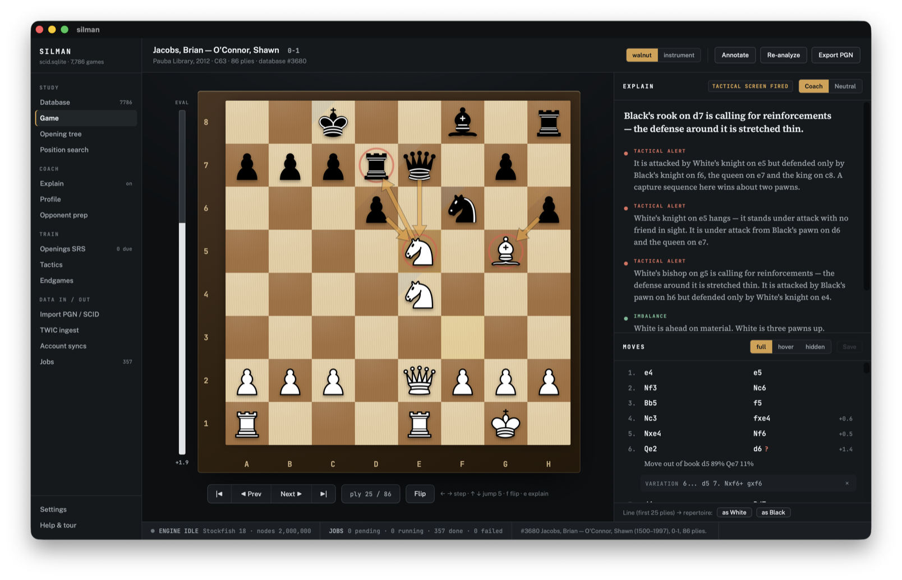
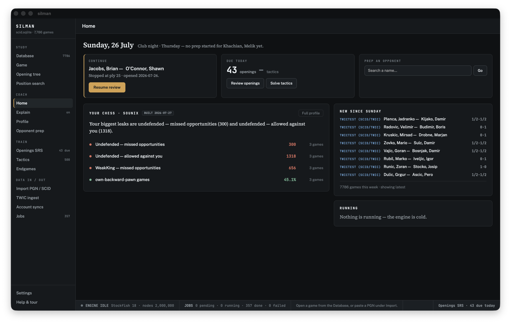
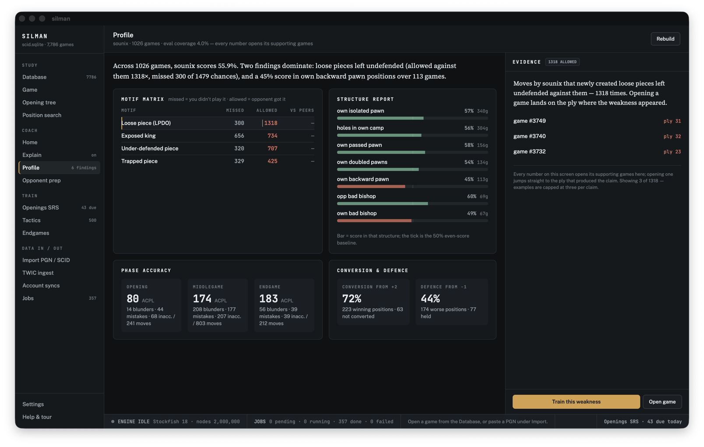

Open-source desktop app · macOS & Linux
Kibitz is a chess coach that explains positions in human terms — and trains you on your own weaknesses.
Underneath the coach sits a ChessBase-class database: SCID and PGN import, opening prep, spaced-repetition repertoires, tactics, and tablebase endgames. Everything stays on your machine, and the engine stays off until a tactical screen fires or you ask.

The coach
Explanations you can read, evidence you can see.
The Explain panel narrates each position in plain sentences — tactical alerts, imbalances, plans — and every sentence is wired to marks on the board. Hover a sentence and its evidence lights up. The prose comes from Kibitz's own static analysis, so it runs instantly and works offline; the full engine is reserved for confirming what the screens find.

Your day at a glance
Home shows only real data: the game you left open, cards due, new imports this week, and your profile's top findings. Absent data means absent panels — never invented widgets.

Trained on your own games
The profiler reads your corpus and names your leaks — loose pieces, exposed kings, weak structures — with every number linked to the games that produced it. One click drills the weakness it found.
The database
A serious database underneath.
Kibitz keeps everything in one SQLite file you own — games, annotations, engine evaluations, training history, and the provenance of every import.
- Import SCID (.si4) databases and PGN files, with comments, NAGs, and variations preserved
- Opening tree and full-board position search across the whole database
- Opponent prep: repertoire fingerprints and book deviations for any player
- Openings repertoires trained with FSRS spaced repetition
- Tactics training from the Lichess puzzle database
- Endgame drills with Syzygy tablebase verdicts
- TWIC, Lichess, chess.com, and FICS game downloads to your machine
- Batch engine analysis through a job queue — the engine is cold by default
Download
Get Kibitz
Free software under the GPL-3.0. Pick your system — the current build is v0.1.1.
macOS
Apple Silicon is M1 and later; Intel is anything older. Not sure? menu → About This Mac.
Open it and drag Kibitz to Applications. Both are signed and notarized by Apple, so they launch with no warning.
Windows · 64-bit
The usual installer. There is also a -setup.exe on the
release page if you prefer it.
Not yet signed: Windows will show “Windows protected your PC”. Click More info → Run anyway. Signing is in progress.
Linux · x86-64
Make it executable (chmod +x) and run it — no install.
On Debian and Ubuntu the .deb on the release page
installs with sudo dpkg -i.
Build from source
Rust + Node are all you need. See Building from source in the README.
Kibitz uses Stockfish for analysis — install it separately and Kibitz will find it.
Every file, checksums and release notes: all releases.
Support
Support the Temecula Chess Club
Kibitz's maintainer runs and supports the Temecula Chess Club. If the app is useful to you, a donation to the club is the best way to say thanks — it keeps club nights going: boards, clocks, space, and coffee.
Donate to the club